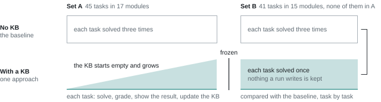
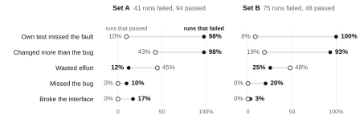
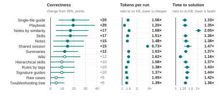
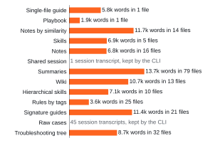
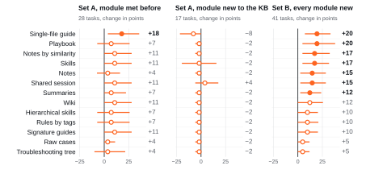

An approach is data on one base setup, and the KB is a directory the harness snapshots but never reads

Seven components, sixteen contracts:
docs/spec.mdThirteen ways to keep what a debugging agent learns, built on one set of ChipBench tasks and tested on another.
Entry type × index: 13 of 51 run
Ways of working, not cases: repair, don't reimplement.
Load it whole, every task: +19.5 for the playbook and the guide.
1.2 to 1.7 times the tokens per run; $0.50 to $2.10 to build.
B shares no module with A, so only what generalises carries.

docs/spec.md

always @(posedge clk or negedge rst_n) if (!rst_n) match_f <= 1'b0; - else if (a_tem[8:6] == 3'b001) + else if (a_tem[8:6] == 3'b011) match_f <= 1'b1;
The reference differs in this line only.
if (!rst_n) begin a_tem <= 9'b111111111; match <= 1'b0; end else begin a_tem <= next_window; match <= (next_window[8:6] == 3'b011) && (next_window[2:0] == 3'b110); end
Shaded: changed beyond the fix. Its own test passed; the hidden one failed 16 of 237 samples.
Prob002, assignment bug · baseline run 1Preserve the existing registered check's sampling point when aligning mixed combinational and registered checks in a shift-register detector.The playbook, after the run on the previous slide
| Single file | Flat files | Catalogue | Signature key | Tags | Hierarchy | Graph | Similarity search | ||
|---|---|---|---|---|---|---|---|---|---|
| What happened | Transcript | Shared session | Raw cases | ||||||
| Summary | Summaries | ||||||||
| What is true | Note | Notes | Notes by similarity | ||||||
| Rule | Playbook | Rules by tags | |||||||
| Page | Wiki | Wiki, linked | |||||||
| What to do | Skill | Skills | Hierarchical skills | ||||||
| Guide | Single-file guide | Signature guides | |||||||
| Step | Troubleshooting tree |
| What limits runs on A | Failed runs | What would address it | Approaches that hold it |
|---|---|---|---|
| Changed more than the bug | 40 of 41 | One general rule, read every time | Playbook, single-file guide |
| Own test missed the fault | 40 of 41 | A testing procedure or script | Skills, hierarchical skills |
| Missed the bug | 4 of 41 | Diagnosis by symptom | Signature guides, troubleshooting tree |
1852b56

When debugging an up/down counter, check that each mode steps in the correct direction and wraps from the last legal count in that direction, as in two TopModule decimal counter tasks where fixing the up-mode step from subtraction to addition …
One of the playbook's 32 rules. None states the general lesson.
Worked
Failed

Ways of working, not cases: repair, don't reimplement.
Load it whole, every task: +19.5 for the playbook and the guide.
1.2 to 1.7 times the tokens per run; $0.50 to $2.10 to build.
B shares no module with A, so only what generalises carries.
What this cannot show